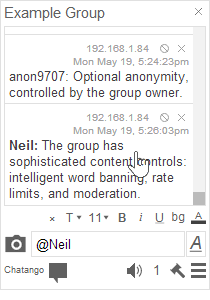
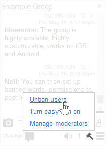
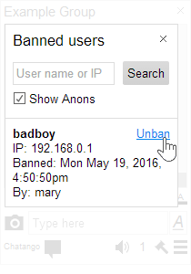

Help: group chat
Respond to a user
Click on a message to respond to that user with an @tag before their name. When they receive that message they will here a different message sound and the message will be marked with a yellow border.
Others can't read my messages
You may have been banned by a moderator in that group chat.Ask a moderator to unban you
Moderators can unban users by clicking the Main menuThey can search for your ban by your user name or your IP address in the HTML 5 version.

Become a moderator
Moderators are not made by Chatango, they are made by the owner (creator) of each individual chat group. Please contact the owner to request becoming a moderator or about removing a moderator.I visit a site with a group chat that I do not want to read
Turn an embedded chat off

|
If you visit a web page with an embedded Chatango chat, but do not wish to see the chat on it, you can turn it off by clicking on the If you do not see |